[15-2] 读写内部FLASH&读取芯片ID — 学习笔记
一句话结论
三级分层：应用层 → Store（数组 + Init/Save/Clear）→ MyFLASH（FLASH_Unlock() → 库函数 → FLASH_Lock()）；第 0 个半字作 0xA5A5 标志，数据区选 0x0800FC00。
本集定位
- 代码课，承接 [15-1] 的理论：
15-1 读写内部FLASH（复制 OLED 显示屏工程）、15-2 读取芯片ID（复制15-1改名），两个工程都从复制写到下载验证； - 接线：OLED（I2C）+ 两个按键（一个保存/变换数据、一个清零）；
- 新建
MyFLASH.c/h、Store.c/h两个模块，Store层对外只给Init / Save / Clear； - 整门课最完整的一套分层封装示范。
1. 分层架构规划
- main.c 上红笔三框：应用层 →
Store→MyFLASH，箭头表示调用方向； - 应用层：只管把参数写进
Store的数组、决定什么时候保存； Store层：维护数组 +Store_Init/Store_Save/Store_Clear，决定「存哪些、怎么组织、首次怎么初始化」；MyFLASH层：只做读 / 擦除 / 编程的原始操作，把库函数再包一层；- 好处：应用层不关心存在哪、怎么擦、什么读写策略；
- ⚠ 作者原话「这个思路是我自己想的，并不是固定的」——推荐做法，不是固定范式。
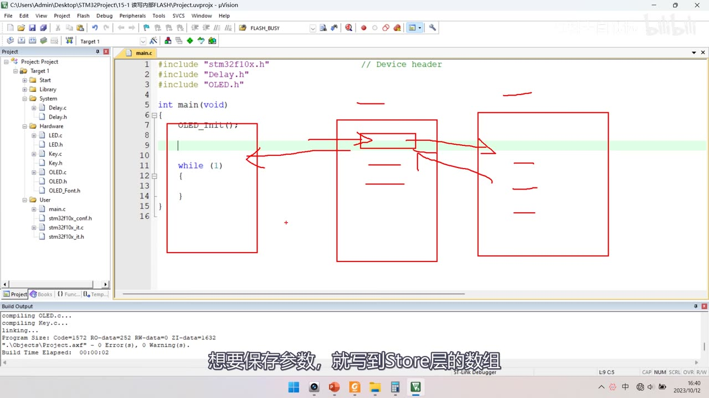
图 1：main.c + 红笔三框——应用层（OLED_Init(); while(1){}）、中间 Store 层、右侧 MyFLASH 层，红箭头标出调用方向
2. 先回顾 Flash 读写流程与工具
- 回顾 [15-1] 的读 / 页擦除 / 全擦除 / 编程 + 选项字节——每个功能对应一个库函数；
- 选项字节本课不作要求：少量需求用 ST-LINK Utility 的
Target → Option Bytes勾选后Apply更方便； - ⚠ 芯片自锁（本集最有价值的坑）：用代码配置读写保护容易锁死芯片——写了写保护但程序里没预留解除代码，就无法再下载程序；只能靠 ST-LINK Utility 的
Target → Option Bytes去掉读写保护后Apply救活。
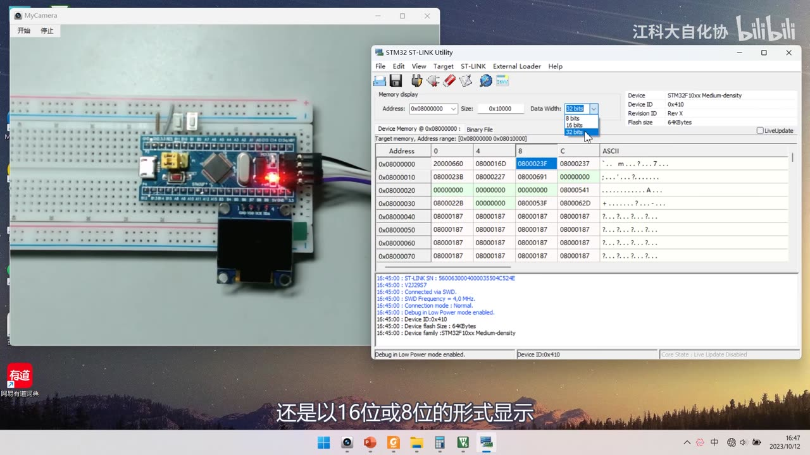
图 2：Memory display 可切 8 / 16 / 32 bits 显示——Device STM32F10xx Medium-density、Device ID 0x410、Flash size 64KBytes；Connected via SWD、SWD Frequency = 4.0 MHz，地址 0x08000000～0x08000070
3. 库函数速览（stm32f10x_flash）
3.1 文件头说明
- 该驱动为全部 STM32F10x 提供配置与编程 Flash 的函数，含 XL 大容量型号；
- XL 大容量是双 bank、支持 RWW（读写同时）：
bank1: fixed size of 512 Kbytes (256 pages of 2Kbytes each)、bank2: up to 512 Kbytes； - 其他型号只有单 bank、最大 512K：
While other STM32F10x devices features only one bank with memory up to 512 Kbytes.； - V3.3.0 起部分函数兼容所有型号、部分仅 XL 专用（
In version V3.3.0, some functions were updated and new ones were added to support STM32F10x XL devices.）。
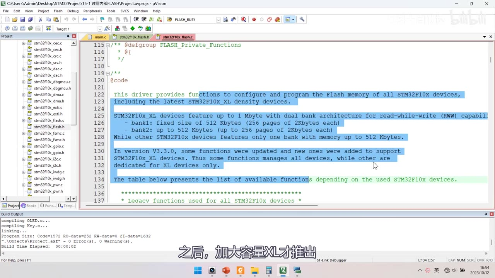
图 3：stm32f10x_flash.c 文件头——说明驱动范围与 XL 双 bank、RWW；末尾一行说其他型号单 bank、最大 512K
3.2 FLASH_Status 五值
typedef enum
{
FLASH_BUSY = 1, /* 忙 */
FLASH_ERROR_PG, /* 编程错误 */
FLASH_ERROR_WRP, /* 写保护错误 */
FLASH_COMPLETE, /* 完成 */
FLASH_TIMEOUT /* 等待超时 */
} FLASH_Status;
- 擦除/编程函数都返回这个枚举告知状态（不想关心可以忽略）；五值是
FLASH_BUSY = 1、ERROR_PG、ERROR_WRP、COMPLETE、TIMEOUT。
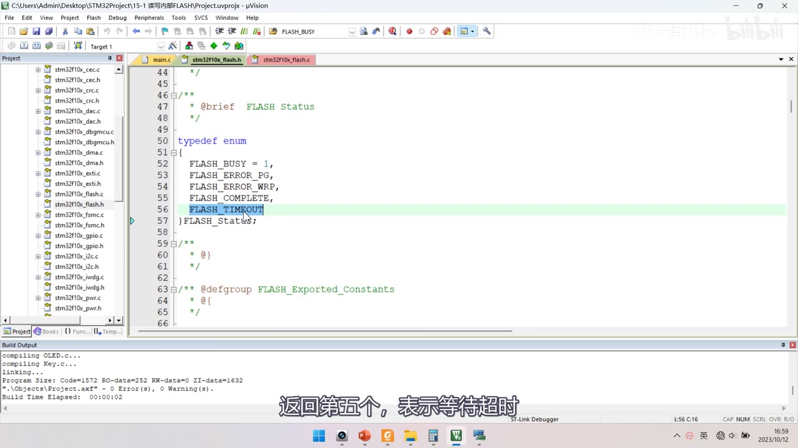
图 4：stm32f10x_flash.h 的 FLASH_Status——FLASH_BUSY = 1、FLASH_ERROR_PG、FLASH_ERROR_WRP、FLASH_COMPLETE、FLASH_TIMEOUT（高亮，表示等待超时）
3.3 主要库函数
| 函数 | 用途 |
|---|---|
FLASH_SetLatency / FLASH_PrefetchBufferCmd / FLASH_HalfCycleAccessCmd |
与内核执行代码有关，不用管 |
FLASH_Unlock() / FLASH_Lock() |
解锁 / 加锁（键寄存器写 KEY1、KEY2 / 置 LOCK 位） |
FLASH_ErasePage(Page_Address) |
页擦除（需给页起始地址） |
FLASH_EraseAllPages() |
全擦除 |
FLASH_EraseOptionBytes() |
擦除选项字节 |
FLASH_ProgramWord(Address, Data) |
字编程（内部就是写两次半字） |
FLASH_ProgramHalfWord(Address, Data) |
半字编程 |
FLASH_ProgramOptionByteData + 选项字节 4 个写函数 + FLASH_GetReadOutProtectionStatus / GetWriteProtectionOptionByte |
选项字节相关 |
FLASH_GetFlagStatus / FLASH_ClearFlag |
标志位 |
- 这些函数内部已经包含「等待忙」：
FLASH_ErasePage内部＝事前等待 → 置 PER → 写FLASH_AR→ 置 STRT → 事后等待 → 最后把 PER 清零；FLASH_ProgramHalfWord内部＝事前等待 → 置 PG → 地址强转指针再取内容赋值 → 事后等待； - 均不含解锁/加锁——要自己调
FLASH_Unlock()与FLASH_Lock()，也就是FLASH_Unlock();、FLASH_Lock();两步； - 等待忙由
FLASH_WaitForLastOperation完成；非 XL 分支的源码是if(status == FLASH_COMPLETE) { /* if the previous operation is completed, proceed to erase all pages */ FLASH->CR |= CR_MER_Set; FLASH->CR |= CR_STRT_Set; status = FLASH_WaitForLastOperation(EraseTimeout); /* Disable the MER Bit */ FLASH->CR &= CR_MER_Reset; }。
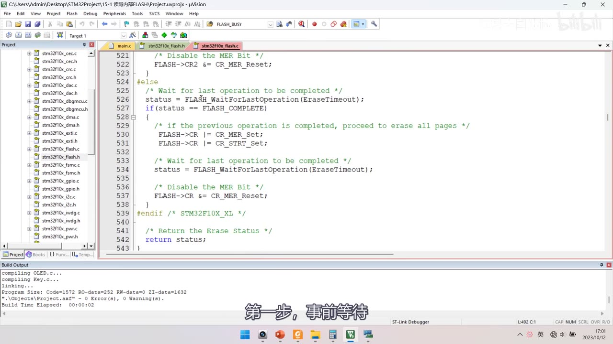
图 5：FLASH_EraseAllPages 源码（else 非 XL 分支）：/* Wait for last operation to be completed */ status = FLASH_WaitForLastOperation(EraseTimeout); → 置 MER、STRT → 再等待 → 清 MER → return status;
4. 写 MyFLASH 模块（底层原始操作）
4.1 建模块与「无 Init」
- 工程 System 组下新建
MyFLASH.c/MyFLASH.h； MyFLASH没有Init函数——FLASH 不需要初始化。
4.2 三个读函数（一句返回，地址不加偏移）
uint32_t MyFLASH_ReadWord(uint32_t Address)
{
return *((__IO uint32_t *)(Address));
}
uint16_t MyFLASH_ReadHalfWord(uint32_t Address)
{
return *((__IO uint16_t *)(Address));
}
uint8_t MyFLASH_ReadByte(uint32_t Address)
{
return *((__IO uint8_t *)(Address));
}
- 三个函数都只有一句返回：
MyFLASH_ReadWord是return *((__IO uint32_t *)(Address));，ReadHalfWord（uint16）、ReadByte（uint8）只是把类型换掉； - 地址直接用参数、不需要加偏移（与外设寄存器「基地址+偏移」的写法不同，这里就是绝对地址）；
- main 里测试三种宽度：
OLED_ShowHexNum(1, 1, MyFLASH_ReadWord(0x08000000), 8);、OLED_ShowHexNum(2, 1, MyFLASH_ReadHalfWord(0x08000000), 4);、OLED_ShowHexNum(3, 1, MyFLASH_ReadByte(0x08000000), 2);。
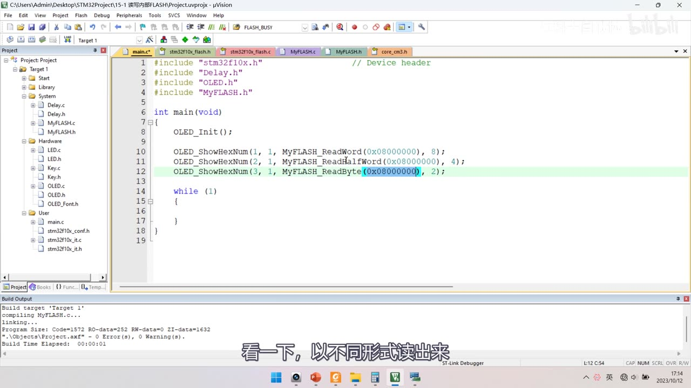
图 6：System 组下新增 MyFLASH.c / MyFLASH.h，main 用 OLED_ShowHexNum 按 8/4/2 位宽显示三种读法的结果
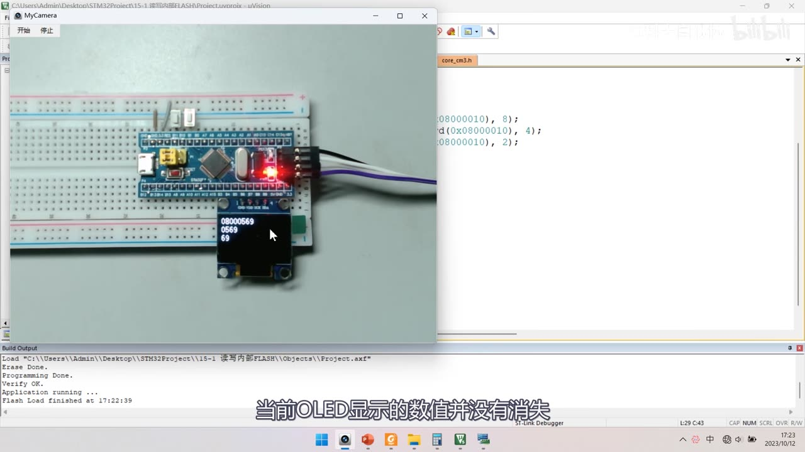
图 7：三行显示 08000569 / 0569 / 69——OLED_ShowHexNum(1, 1, MyFLASH_ReadWord(0x08000010), 8); 等三行把地址改成 0x08000010 后读到；内存里是 69 05 00 08，顺带验证小端字节序
4.3 擦除 / 编程（三行式封装）
void MyFLASH_EraseAllPages(void)
{
FLASH_Unlock();
FLASH_EraseAllPages();
FLASH_Lock();
}
void MyFLASH_ErasePage(uint32_t PageAddress)
{
FLASH_Unlock();
FLASH_ErasePage(PageAddress);
FLASH_Lock();
}
void MyFLASH_ProgramWord(uint32_t Address, uint32_t Data)
{
FLASH_Unlock();
FLASH_ProgramWord(Address, Data);
FLASH_Lock();
}
void MyFLASH_ProgramHalfWord(uint32_t Address, uint16_t Data)
{
FLASH_Unlock();
FLASH_ProgramHalfWord(Address, Data);
FLASH_Lock();
}
- 四个函数全是同一套路：解锁 → 调库函数 → 加锁——
FLASH_Unlock(); FLASH_EraseAllPages(); FLASH_Lock();、FLASH_Unlock(); FLASH_ErasePage(PageAddress); FLASH_Lock();、FLASH_Unlock(); FLASH_ProgramWord(Address, Data); FLASH_Lock();； - ⚠ 写字节很麻烦，建议用「缓冲区」：先在 SRAM 改好整块，再整页写回。
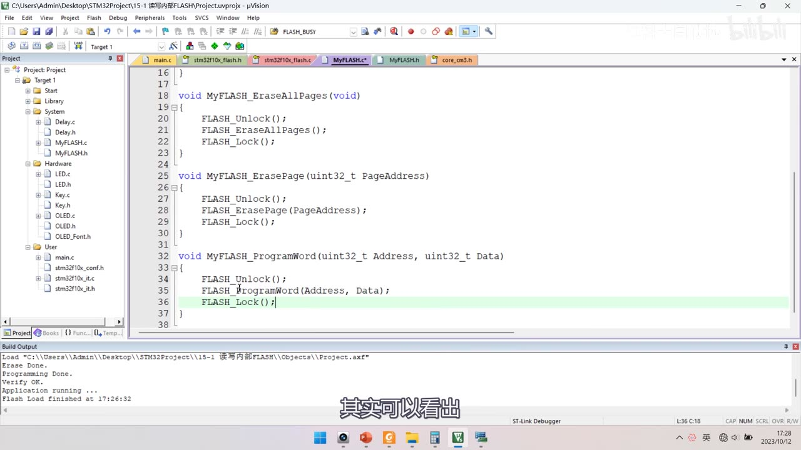
图 8：封装函数签名——MyFLASH_EraseAllPages、MyFLASH_ErasePage(uint32_t PageAddress)、MyFLASH_ProgramWord(uint32_t Address, uint32_t Data)、void MyFLASH_ProgramHalfWord(uint32_t Address, uint16_t Data)
4.4 编程测试与全擦除的「自杀」现象
OLED_ShowHexNum(1, 1, MyFLASH_ReadWord(0x08000010), 8);
OLED_ShowHexNum(2, 1, MyFLASH_ReadHalfWord(0x08000010), 4);
OLED_ShowHexNum(3, 1, MyFLASH_ReadByte(0x08000010), 2);
MyFLASH_ErasePage(0x0800FC00); /* 先擦最后一页 */
MyFLASH_ProgramWord(0x0800FC00, 0x12345678); /* 写字 */
MyFLASH_ProgramHalfWord(0x0800FC10, 0xABCD); /* 写半字 */
while (1)
{
KeyNum = Key_GetNum();
if (KeyNum == 1) { MyFLASH_EraseAllPages(); } /* ⚠ 全擦除：连程序自己也被擦掉 */
if (KeyNum == 2) { … } /* 页擦除：换地址擦不同页 */
}
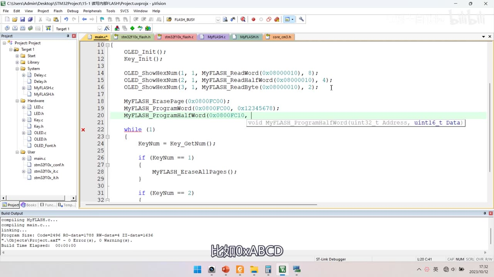
图 9：测试代码——MyFLASH_ErasePage(0x0800FC00);、MyFLASH_ProgramWord(0x0800FC00, 0x12345678);、MyFLASH_ProgramHalfWord(0x0800FC10, …，主循环里 while(1){ KeyNum = Key_GetNum(); if (KeyNum == 1) { MyFLASH_EraseAllPages(); } … }
- 先用
MyFLASH_ErasePage(0x0800FC00)擦掉最后一页，再用 ST-LINK Utility 看闪存内容（可切 8/16/32 bits）验证写入结果； - ⚠ 全擦除会把程序自己擦掉——演示中按 Key1 全擦除后「无论按什么键都没反应」，既是现象也是风险；
- 页擦除测试：先擦
0x08000000（第 1 页）→ 再改0x08000400擦第 2 页，观察数据变化。
5. 写 Store 模块（中间层）
5.1 数组与首元素标志位
#include "stm32f10x.h"
#include "MyFLASH.h"
uint16_t Store_Data[512]; /* 类型与闪存半字统一 */
Store.c先#include "stm32f10x.h"、#include "MyFLASH.h"，再定义uint16_t Store_Data[512];；- 数组元素用
uint16_t，因为闪存只能按半字写（统一后最方便）； - 数组第 0 个元素是「标志位」，千万不要当数据使用；
- 标志值
0xA5A5——闪存擦除后默认全是FF，用它判断「是否已经初始化过」。
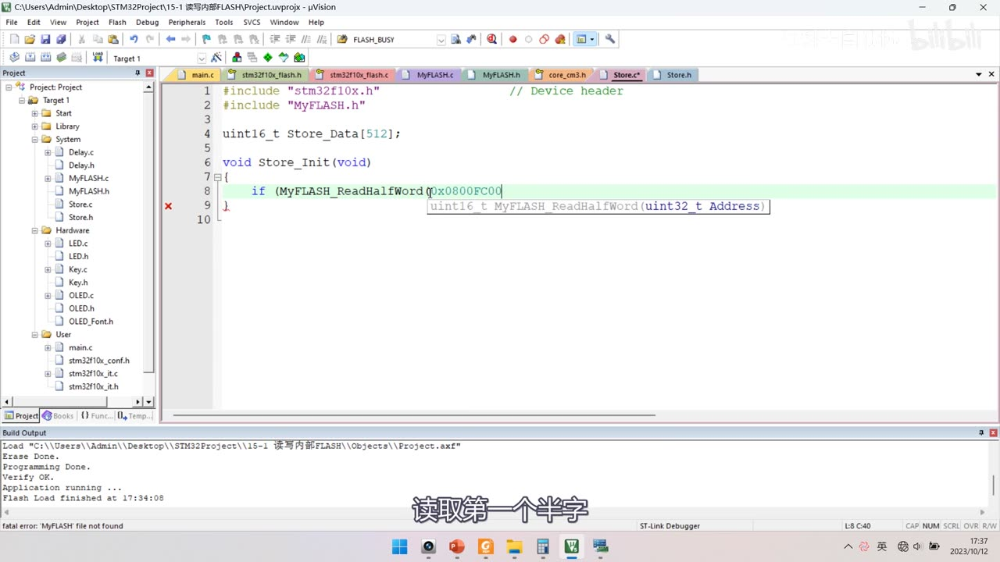
图 10：Store.c 开头——uint16_t Store_Data（512）;、void Store_Init(void) { if (MyFLASH_ReadHalfWord(0x0800FC00) 正在输入；Build Output 里 fatal error: MyFLASH.h file not found 是中间态
5.2 Store_Init()：首次初始化 + 每次上电转存
void Store_Init(void)
{
/* ① 首次上电：闪存还没初始化（第 0 个半字不是 0xA5A5） */
if (MyFLASH_ReadHalfWord(0x0800FC00) != 0xA5A5)
{
MyFLASH_ErasePage(0x0800FC00); /* 先擦整页 */
MyFLASH_ProgramHalfWord(0x0800FC00, 0xA5A5); /* 写标志位 */
for (uint16_t i = 1; i < 512; i ++) /* 其余 511 个半字清零 */
{
MyFLASH_ProgramHalfWord(0x0800FC00 + i * 2, 0x0000);
}
}
/* ② 每次上电：把闪存里的数据整体转存到 SRAM 数组 */
for (uint16_t i = 0; i < 512; i ++)
{
Store_Data[i] = MyFLASH_ReadHalfWord(0x0800FC00 + i * 2);
}
}
- 存储起始地址
0x0800FC00＝C8T6 的最后一页（页 63），偏移是+ i * 2（半字＝2 字节）； - 转存就是把这个单句
Store_Data[i] = MyFLASH_ReadHalfWord(0x0800FC00 + i * 2);塞进for循环（0 到 511）：for (uint16_t i = 0; i < 512; i ++) { Store_Data[i] = MyFLASH_ReadHalfWord(0x0800FC00 + i * 2); }。
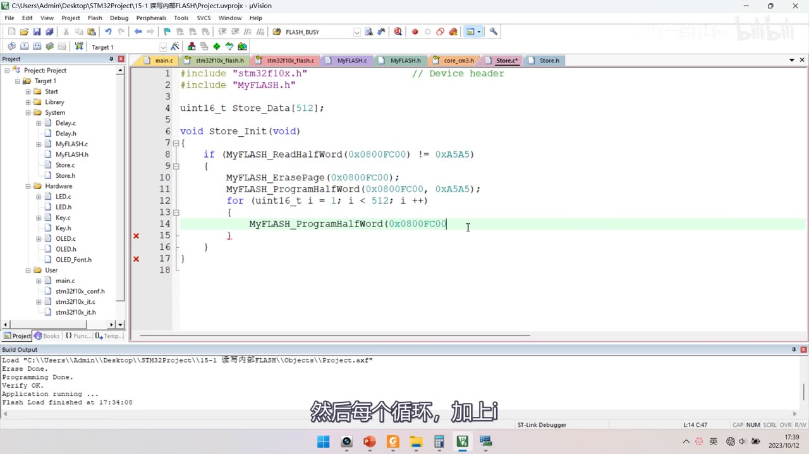
图 11：标志位判断——if (MyFLASH_ReadHalfWord(0x0800FC00) != 0xA5A5) 成立才执行 { MyFLASH_ErasePage(0x0800FC00); MyFLASH_ProgramHalfWord(0x0800FC00, 0xA5A5); for (uint16_t i = 1; i < 512; i ++) { MyFLASH_ProgramHalfWord(0x0800FC00 …
5.3 Store_Save 与 Store_Clear
void Store_Save(void)
{
MyFLASH_ErasePage(0x0800FC00); /* 整页擦除 */
for (uint16_t i = 0; i < 512; i ++) /* 整块写回 */
{
MyFLASH_ProgramHalfWord(0x0800FC00 + i * 2, Store_Data[i]);
}
}
void Store_Clear(void)
{
for (uint16_t i = 1; i < 512; i ++) { Store_Data[i] = 0x0000; } /* 保留第 0 个标志位 */
Store_Save();
}
Store_Save()=MyFLASH_ErasePage(0x0800FC00)+ 整块写回——保存一次就要擦写整页，别高频调用（闪存寿命 + CPU 暂停）；- 连成一行就是
void Store_Save(void) { MyFLASH_ErasePage(0x0800FC00); for (uint16_t i = 0; i < 512; i ++) { MyFLASH_ProgramHalfWord(0x0800FC00 + i * 2, Store_Data[i]); } }，OCR 版把方括号记成全角：void Store_Save(void) { MyFLASH_ErasePage(0x0800FC00); for (uint16_t i = 0; i < 512; i ++) { MyFLASH_ProgramHalfWord(0x0800FC00 + i * 2, Store_Data（i）); } }； Store_Clear()不要清掉第 0 个标志位（否则下次上电会重走初始化）。
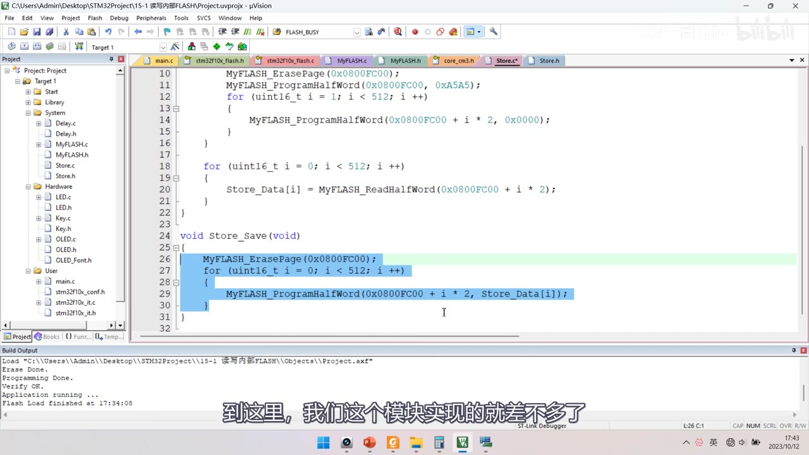
图 12：循环清零 MyFLASH_ProgramHalfWord(0x0800FC00 + i * 2, 0x0000);、上电转存 for (uint16_t i = 0; i < 512; i ++) { Store_Data（i） = MyFLASH_ReadHalfWord(0x0800FC00 + i * 2); }、Store_Save 整块写回（高亮）
6. 应用层与地址规划
6.1 main（应用层）
int main(void)
{
OLED_Init();
Key_Init();
Store_Init();
while (1)
{
KeyNum = Key_GetNum();
if (KeyNum == 1)
{
Store_Data[1] ++;
Store_Data[2] += 2;
Store_Data[3] += 3;
Store_Data[4] += 4;
Store_Save();
}
if (KeyNum == 2)
{
Store_Clear();
}
OLED_ShowHexNum(1, 6, Store_Data[0], 4);
OLED_ShowHexNum(3, 1, Store_Data[1], 4);
OLED_ShowHexNum(3, 6, Store_Data[2], 4);
OLED_ShowHexNum(4, 1, Store_Data[3], 4);
OLED_ShowHexNum(4, 6, Store_Data[4], 4);
}
}
- 按键：
if (KeyNum == 1) { Store_Data[1] ++; Store_Data[2] += 2; Store_Data[3] += 3; Store_Data[4] += 4; Store_Save(); }、if (KeyNum == 2) { Store_Clear(); }；累加那串单看就是Store_Data[1] ++; Store_Data[2] += 2; Store_Data[3] += 3; Store_Data[4] += 4; Store_Save();； - 显示
Store_Data[0]～Store_Data[4]：OLED_ShowHexNum(1, 6, Store_Data[0], 4); OLED_ShowHexNum(3, 1, Store_Data[1], 4); OLED_ShowHexNum(3, 6, Store_Data[2], 4); OLED_ShowHexNum(4, 1, Store_Data[3], 4); OLED_ShowHexNum(4, 6, Store_Data[4], 4);；画面 OCR 把方括号记成全角：OLED_ShowHexNum(1, 6, Store_Data（0）, 4); OLED_ShowHexNum(3, 1, Store_Data（1）, 4); OLED_ShowHexNum(3, 6, Store_Data（2）, 4); OLED_ShowHexNum(4, 1, Store_Data（3）, 4); OLED_ShowHexNum(4, 6, Store_Data（4）, 4);； - 中途先写成
if (KeyNum == 1) { Store_Data[1] = 0x1234; Store_Data[2] = 0xABCD; Store_S…再改成累加； - 现象：按键递增 → 断电/复位 → 数值保持，再按键继续递增并 Save，再断电仍在（与 [15-1] 片头演示一致）；
- 应用层只碰
Store_Data[]与Store_Save()/Store_Clear()，完全不关心底层地址与擦写。
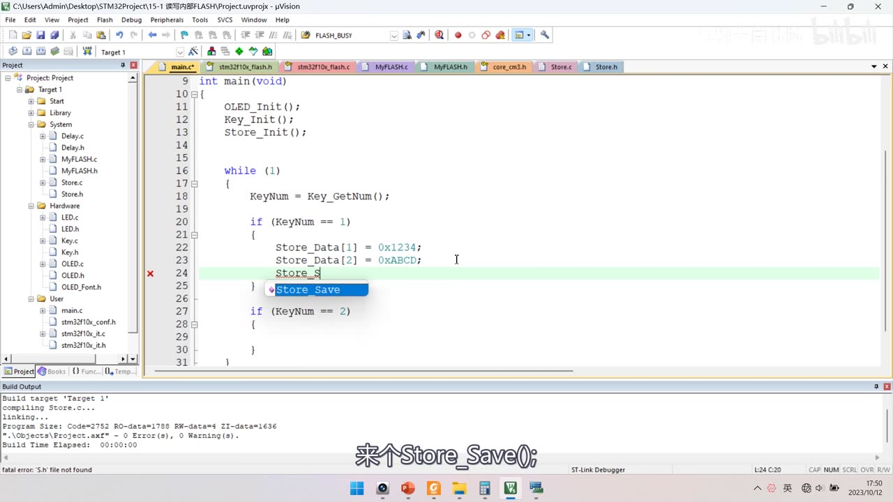
图 13：OLED_Init(); Key_Init(); Store_Init(); 之后写 if (KeyNum == 1) { Store_Data（1） = 0x1234; Store_Data（2） = 0xABCD; Store_S…，补全下拉里选 Store_Save
6.2 地址规划（把地址抽成宏 + 看 IROM1）
- 把「存储区起始地址」定义成宏（如
#define STORE_START_ADDRESS 0x0800FC00）替换所有硬编码，代码里统一写STORE_START_ADDRESS——大量出现的可配置参数一定要定义宏； - 规划依据：Keil
Options for Target → Target页的Target → Read/Only Memory Areas——IROM1Start0x8000000、Size0x10000（默认全部 64K）、IRAM10x20000000/0x5000； - 再看编译输出的
Program Size（本例 2664 字节 ≈ 2.6KB，即0xA68）——据此选用户数据区，避开程序占用空间； - 小技巧：把 IROM1 的 Size 改小，把剩余空间「留出来」给用户数据，防止程序长大后覆盖数据区。
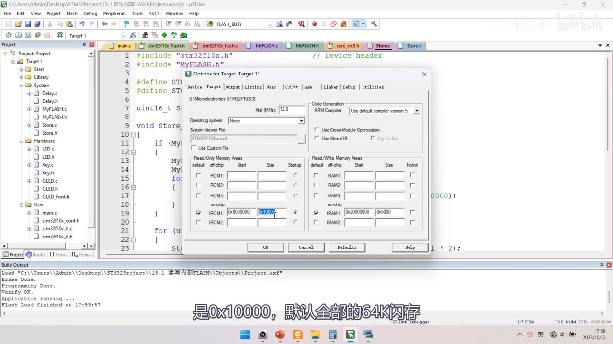
图 14：Options for Target 'Target 1' → Target 页——IROM1 Start 0x8000000、Size 0x10000；IRAM1 Start 0x20000000、Size 0x5000；芯片 STM32F10xxC8、Xtal 12.0 MHz
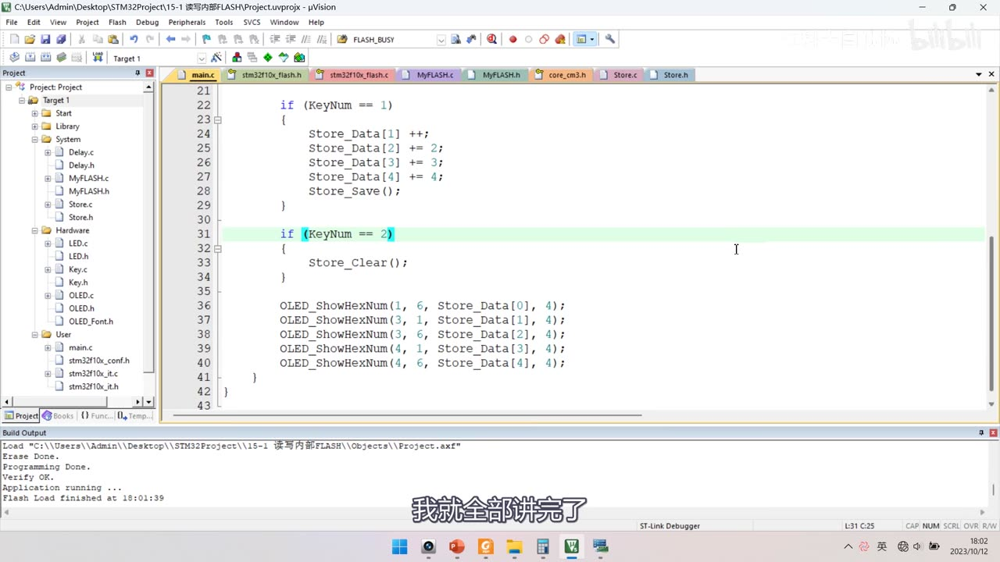
图 15：最终应用层——if (KeyNum == 1) { Store_Data（1） ++; Store_Data（2） += 2; Store_Data（3） += 3; Store_Data（4） += 4; Store_Save(); }、if (KeyNum == 2) { Store_Clear(); }、以及五行 OLED_ShowHexNum 显示
7. 程序②：15-2 读取芯片ID
- 复制
15-1工程 → 改名15-2 读取芯片ID→ 编译；
OLED_Init();
OLED_ShowString(1, 1, "F_SIZE:");
OLED_ShowHexNum(1, 8, *((__IO uint16_t *)(0x1FFFF7E0)), 4); /* 闪存容量 */
OLED_ShowString(2, 1, "U_ID:");
OLED_ShowHexNum(2, 6, *((__IO uint16_t *)(0x1FFFF7E8)), 4); /* UID 低 16 位 */
OLED_ShowHexNum(2, 11, *((__IO uint16_t *)(0x1FFFF7E8 + 0x02)), 4);/* UID 次 16 位 */
OLED_ShowHexNum(3, 1, *((__IO uint32_t *)(0x1FFFF7E8 + 0x08)), 8);/* 32 位读：偏移 0x08、长度 8 */
while (1) { }
- 两行标题
OLED_ShowString(1, 1, "F_SIZE:")、OLED_ShowString(2, 1, "U_ID:")，容量是OLED_ShowHexNum(1, 8, *((__IO uint16_t *)(0x1FFFF7E0)), 4);； F_SIZE（0x1FFFF7E0，16 位） → 显示0040＝64K；UID（0x1FFFF7E8，96 位） → 按半字读0x00、+0x02（再往下可+0x04），再按全字读+0x08（显示长度 8）：OLED_ShowHexNum(2, 6, *((__IO uint16_t *)(0x1FFFF7E8)), 4);、OLED_ShowHexNum(2, 11, *((__IO uint16_t *)(0x1FFFF7E8 + 0x02)), 4);、OLED_ShowHexNum(3, 1, *((__IO uint32_t *)(0x1FFFF7E8 + 0x02)), 4);- ⚠ 地址偏移运算必须加括号：
(0x1FFFF7E8 + 0x02)——否则指针强制类型转换的优先级会出错； - 实测每片芯片数据都不一样——这是 UID 用于加密的基础。
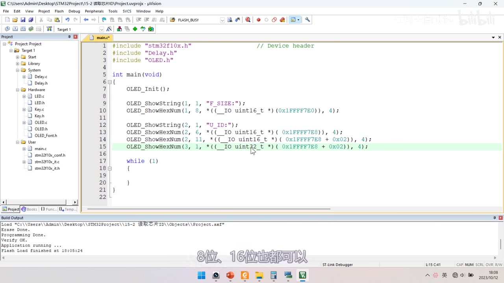
图 16：OLED_ShowString(1, 1, "F_SIZE:");、OLED_ShowString(2, 1, "U_ID:"); 加几行指针读 OLED_ShowHexNum(1, 8, *((__IO uint16_t *)(0x1FFFF7E0)), 4)；末行是中间态（偏移仍 +0x02、长度仍 4，口述为 +0x08、32 位、长度 8）
坑与易错点
- 分层思路是作者自创的（原话「这个思路是我自己想的，并不是固定的」）——推荐做法，不是固定范式。
MyFLASH没有 Init 函数：FLASH 不需要初始化。- 读函数的地址直接用参数、不加偏移（与外设寄存器写法不同）。
FLASH_Status五值写准：FLASH_BUSY = 1、ERROR_PG、ERROR_WRP、COMPLETE、TIMEOUT；内部已含等待忙，但不含解锁/加锁。- 四个封装函数都是三行式：
FLASH_Unlock()→ 库函数 →FLASH_Lock()。 Store_Data[512]第 0 个元素是标志位，千万不要当数据用；标志0xA5A5（擦除后全FF可判首次）。- 存储地址
0x0800FC00＝C8T6 最后一页（页 63）；半字偏移是i * 2。 Store_Init做两件事：首次擦页+写标志+清零；每次上电整体转存到 SRAM。Store_Save= 擦整页 + 整块写回——别高频调用（闪存寿命 + CPU 暂停）。Store_Clear别清第 0 个标志位，否则下次上电会重走初始化。- 全擦除会把程序自己擦掉（按 Key1 后按键全无反应）——既是现象也是风险。
- 代码配读写保护容易芯片自锁：只能靠 ST-LINK Utility 去掉保护后
Apply救活；故选项字节本课不作要求。 - 地址偏移必须加括号：
(0x1FFFF7E8 + 0x02)，否则指针类型转换优先级出错。 - 存储区起始地址要抽成宏，用 IROM1
0x8000000/0x10000+ Program Size（本例 2664B≈2.6KB）规划，避免与程序区冲突。 - 8/16/32 位读同一地址得
69/0569/08000569——顺带验证小端字节序（内存69 05 00 08）。